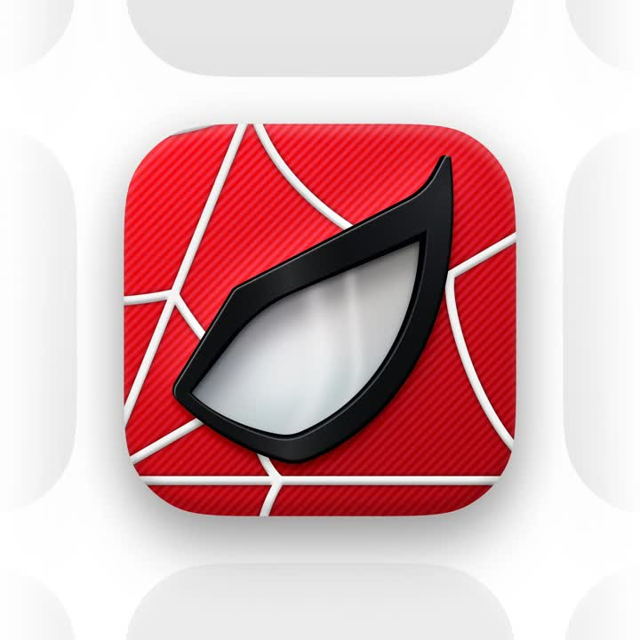

← all interactions
Spiderman icon
What it is
Static render: Spider-Man iOS app icon - glossy black eye frame with a reflective white lens over a red webbed, diagonally-ribbed squircle, presented in a grid of grey placeholder icons.
Media

Frame-by-frame

image
Centered squircle app icon: red base with fine diagonal ribbing and white web lines radiating; the mask eye sits center as a raised black gloss shape with a white/silver lens (soft top-light gradient, specular streak); surrounding greyed placeholder icons fade out of focus. Big soft drop shadow under the eye element.
Mechanics
trigger
static comp
elements
squircle icon, web line pattern, ribbed texture, glossy eye emblem
properties
layered gradients, inner/outer shadows, specular highlights
timing
n/a
easing
n/a
loop
n/a
Build prompt
Recreate this Spider-Man app icon as a layered CSS/SVG render. Squircle 512px (iOS continuous corner mask). Base: red gradient (#E23636 -> #B31B1B) with a diagonal rib texture (repeating-linear-gradient 45deg, 4px pitch, black/6). Web: white/silver 2px lines - concentric arcs centered off-canvas top-left plus radial spokes, 60% opacity. Eye emblem center: outer shape a sharp-angled lens silhouette (SVG path, pointed outer corner, curved inner edge), fill near-black with a top gloss (linear white/25 -> transparent 40%), 4px inner bevel via inner shadow, and a hard drop shadow (0 18px 30px black/45). Lens: silver-white radial gradient (bright top-left), one blurred specular streak, faint reflection of the web lines at 10%. Compose on a light page with the icon floating over a 3x3 grid of blurred grey placeholder squircles.